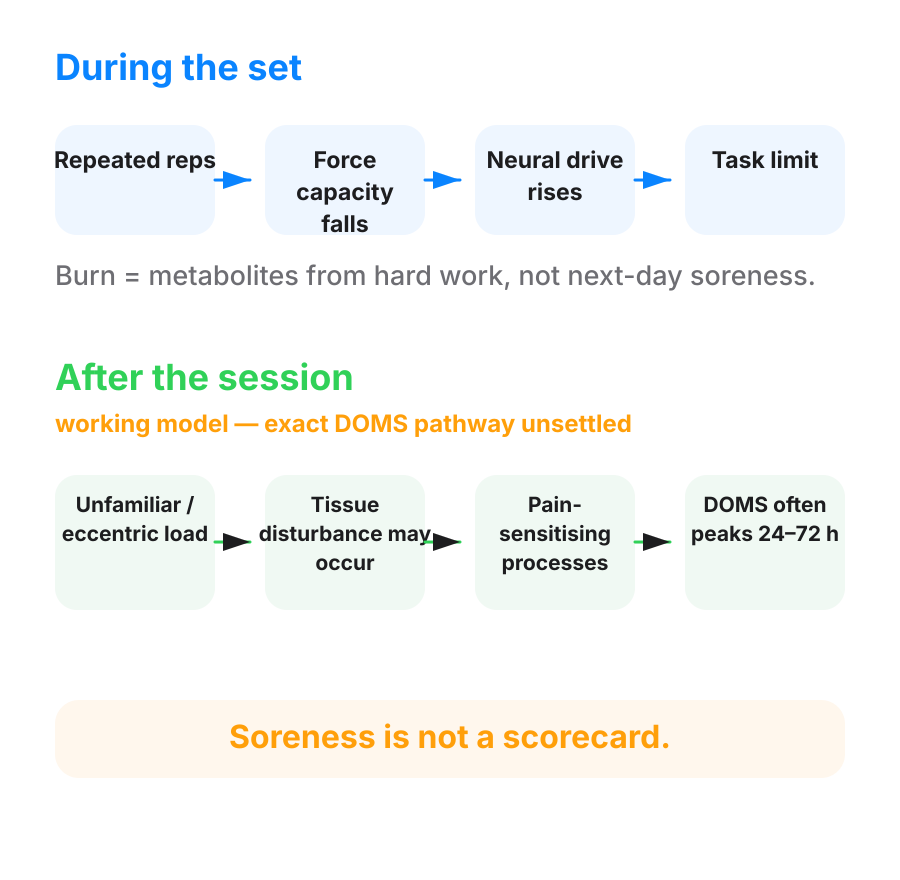

Next-day soreness is not the same thing as the burn during a set. Neither one is lactic acid. What ends a set runs on its own mechanism. What produces pain a day or two later runs on a completely different clock, covered here.
The soreness itself is called (DOMS). It shows up reliably after unfamiliar or heavy lowering (eccentric) work, more than after lifting (concentric) work. That's because lowering work does more of the underlying damage in the first place.

Here is why lowering work does more damage. A lowering contraction uses fewer active bundles of fibres, (motor units), than a lifting one does. So each active fibre carries more strain. At long muscle lengths, that strain lands on the least stable part of the fibre's stretch. The leading explanation is that this is where structural proteins start to tear and the fibre's outer membrane is disrupted.
The pain shows up late because it has to build. The initial strain itself is not what hurts. Here is the working explanation. The strain disturbs the fibre. The disturbed cell leaks its contents. That draws in and activates local immune cells. Those cells drive a cascade of chemical messengers that sensitises the pain-signalling nerves. Only once that cascade builds does the soreness appear.
A blood marker of ongoing membrane disturbance, (creatine kinase), peaked around 60 hours after training in one group of trained men. That fits soreness being a two-or-three-day event, not a same-day one.
Treat that chain, tear then cascade then soreness, as a working model. It is not a demonstrated pathway. Ordinary next-day soreness has shown up in people without the clear loss of structural protein this model predicts. That makes it the best current explanation, not a confirmed one. The fewer-active-fibres claim that opens this rule also rests on thinner human ground than it is often given credit for. Teach the sequence as the model that best organises what is known. Say so plainly if a coach or a client pushes for more certainty than that.
What is solid: the second exposure hurts less. The protection after one bout of unfamiliar, heavy lowering work is well established. Why it happens is not. Both of those are true at once, and neither one needs the other to be settled.
What is left for lactic acid? Nothing. Lactate and the acid that ends a set both clear from the muscle within the session. A cause that clears within the hour cannot be the reason for pain that peaks two to three days later.
"That burn during the set and the soreness two days later are not the same thing, and they're not caused by the same thing. Neither one is lactic acid."
The deeper version. The acid particles that build up in a hard set, (hydrogen ions), may irritate the muscle's stretch sensors, (muscle spindles). That could add to the soreness. Treat it as a possible second contributor. It sits beside the inflammatory explanation above. It does not replace it.
doms: Delayed onset muscle soreness. The soreness that arrives a day or two after training and fades over the next few days.
eccentric: The lowering half of a rep, where the muscle lengthens under load.
concentric: The lifting half of a rep, where the muscle shortens under load.
motor units: One nerve cell and the bundle of muscle fibres it switches on together. A muscle is made of many of them, from small to large.
creatine kinase: A protein that leaks from muscle into the blood when the muscle membrane is disturbed. It marks disturbance, not growth.
hydrogen ions: The acid particles that build up alongside lactate during hard work. They contribute to the burn.
muscle spindles: Sensors inside the muscle that report how far and how fast it is stretching.